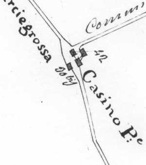

Quercegrossa (Ricordi e memorie)
CAPITOLO I - LUOGHI E PODERI
(CASINO)
Torna all'Indice poderi
Vai all'Indice dei Capitoli
CASINO
Documentato fin dal Cinquecento il podere del Casino è situato alla fine della discesa della Chiesa, sulla via per Petroio. La sua fondazione però dovrebbe essere anteriore di un paio di secoli e potrebbe derivare da una piccola proprietà di coltivatori diretti che possedevano poche staia di terra sulle quali sorsero prima modeste capanne e poi semplici case di abitazione nella quale vivevano e lavoravano autonomamente.
Il podere Casino in una foto degli anni Cinquanta del Novecento.
Nella successiva immagine una mappa di metà Ottocento.
Infatti, ancora nel Cinquecento (1570) sono proprietari i Mochini o Mochi nella persona di Michele del fu Francesco e il detto Mochi è anche presente nella lista dei contadini tassati, il che gli attribuisce il ruolo di coltivatore diretto. E’ solo un’ipotesi, ma un’altra conferma si ricava dal fatto che il Casino è uno dei pochi poderi non appartenente alle grandi famiglie senesi, presenti nella zona. Un decennio dopo il podere è diviso in due parti, una di Francesco Mochini e l’altra di Guerrino Mochini, figli del fu Michele. Questa famiglia lascerà un ricordo nel nome del podere e ancora ai primi dell’Ottocento e detto "Casino del Moco" a testimonianza di una profonda, secolare, radice della famiglia su quelle terre che vanno oltre la semplice proprietà. Con Alessandro Mochini si chiude il capitolo della famiglia al Casino, che dal 1663 passa a Giovanni Battista Andreucci, il quale acquista dalla Curia di Siena dopo un bando pubblico dell’11 maggio 1663 (avevano ereditato due figlie monache del monastero della SS. Concezione di Siena), essendo anche marito di Orsola Fanelli, sorella della moglie del defunto Mochini e accampando inoltre diritti come creditore sulla proprietà. Con gli Andreucci al Casino si registra una delle più longeve proprietà private della parrocchia. Infatti, avrà la durata di 250 anni e si concluderà nel 1905. In quell’anno, l’ultimo Andreucci, Ferdinando, vende il Casino il 7 luglio a Fontana Antonelli Enrico. I precedenti passaggi di proprietà all’interno della famiglia Andreucci si ricavano dalla storia della famiglia alla quale si rimanda. Il 26 novembre 1906 c’è un cambio nella famiglia Fontana Antonelli e passa "tutto il conto per aggiudicazione ai pubblici incanti" alla sorella di Enrico, Maria, la quale dopo sei anni, il 10 luglio 1912, rivende a Paradisi Domenico fu Ambrogio. Alla morte del Paradisi avvenuta nel 1920 il podere è ereditato dalle due figlie, Matilde e Ada, che in breve tempo, nell’arco di due anni, lo cedono nel 1923 all’avvocato Ferruccio Falaschi di Siena. Infine, l’ultimo atto si compie il 26 agosto 1925 quando, per compra, tutto l’intero va al padrone di Petroio Luigi Pallini e da lui, dopo la mezzadria, ai Lenzi.

All’impianto del catasto leopoldino nel 1825 il Casino si presenta come una struttura formata da più ambienti distaccati comprendenti una casa colonica di 726 bq.; un casotto diruto di 56 bq.; altra casa colonica di 1020 bq. (346 mq) e un "Paretajo", ossia un padiglione per la caccia, di 1122 bq. Leggendo la piantina si nota un ambiente completamente diverso dal podere dei nostri tempi con gli edifici posti a ogni punto cardinale, e là dove sarà la capanna, a Sud, vi è una casa isolata detta "Casino di fuori", mentre le altre strutture sono tenute unite da una muro che crea uno spazio interno. Le cosiddette case, evidentemente modesti ambienti abitativi, hanno una ricettività di 7/8 persone al massimo, sia le famiglie dei coloni che dei pigionali. Un notevole intervento edilizio, effettuato dopo il 1860 ad opera degli Andreucci, riduce il fabbricato ad un solo corpo su pianta rettangolare con chiostro d’ingresso all’abitazione su due piani con scala interna, e agli annessi agricoli, mentre la vecchia casa a Sud è trasformata in capanna. Un pozzo fronteggiava il podere. Un’abitazione adattata per un unico colono come già appare nel 1843. Le fertili terre del podere, estese per diciannove/venti ettari, davano dei buoni raccolti fino a 230 ql. di grano con gli Stazzoni, che tribbiavano con i Mori. Buona la produzione di vino e olio. La stalla sempre piena di tredici/quattordici fra bovi, vacche e vitelli; vitelli che venivano venduti al macello del Cellesi, al Braccio, quando raggiungevano il peso di 2,5/ 3 ql. Stalla degli ovini con un massimo di nove pecore e filavano la lana. Gli Stazzoni sono stati l’ultima famiglia mezzaiola ad abitare al Casino. Erano undici persone nel 1946. Nel 1801 le terre del Casino, divise in due poderi, avevano un’estensione di dieci ettari. Le terre confinavano con l’Olmicino, Gaggiola, l’Arginano e a ponente con la terra della chiesa e la strada principale. L’articolata struttura del podere sopradescritta con più ambienti era stata sede di un colono e di pigionali, persino tre nel 1668, ma generalmente uno o due che lavoravano nei poderi Andreucci, poi, come detto, da metà Ottocento solo il contadino. I nomi di mezzadri e pigionali che vi hanno vissuto sono una lunga lista e cito per i primi anni del Seicento, Santi, Drea Frosino, il Machucci Pasquino, Cappannetti, Franci, Granai, Partini. Nell’Ottocento si ricordano le famiglie Fusi, Barbucci, Bartolomeo Brogi, Alessandro Buti, Landi Pellegrino, Forni Niccolò e Gesualdo che compare al censimento del 1931. Dopo i Forni il Manganelli Celso e gli Stazzoni che chiudono la lista e vi abitano fino al 1972.
Il podere Casino immerso nel verde di un paesaggio tipicamente chiantigiano.
Il Casino oggi, dopo restauro.
Capitolo successivo Castagnoli
Inizio pagina
Vai all'Indice dei Capitoli
|